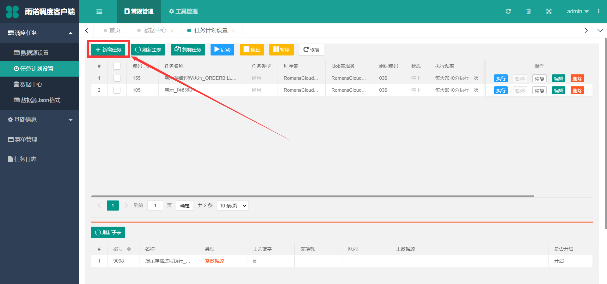
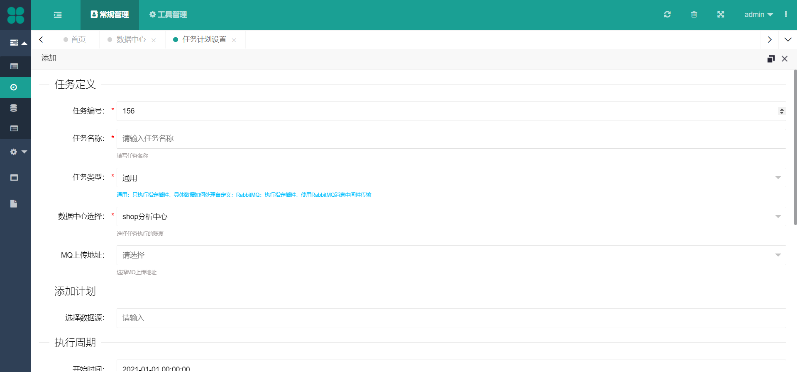
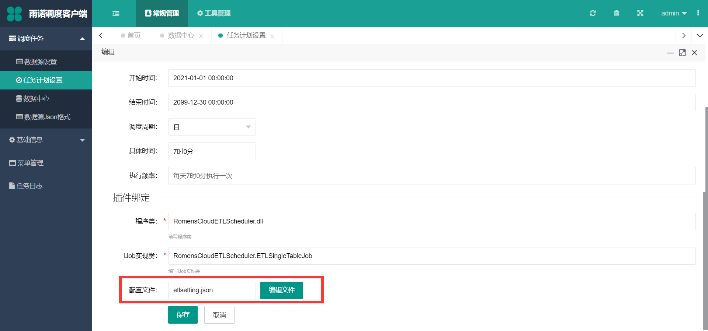
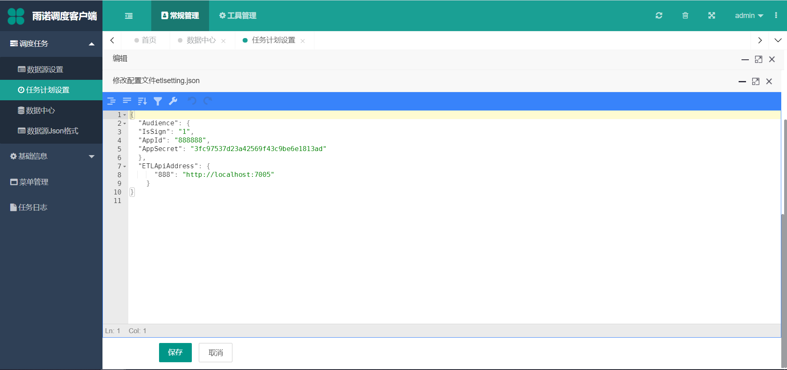

任务计划设置¶
在 维护好数据源后 和 维护好数据中心 后，需要新增调度任务
新增任务¶
 任务编号：必填，保持唯一即可任务名称：必填，符合任务的含义即可任务类型：必填，目前支持 常用调度和中间件调度（RabbitMQ、Kafka）两种形式，如果不是针对中间件传输数据的调度，选择通用即可数据中心选择：必填，选择任务在哪个数据中心下查询 数据源设置 中的数据源（空数据源类型，此处设置无效）MQ上传地址：选填，任务类型选择RabbitMQ或者Kafka配置好的地址（该地址在 消息中间件设置 页面可修改）添加数据源：非必填，该任务调度执行的数据源，可以多选，多选的数据源每次调度都会按顺序循环处理开始时间：选填，调度的开始时间结束时间：选填，调度的结束时间调度周期：选填，分为 小时、日、周、月 ，小时指的每天every day，日指得是每天几点执行一次，周指的是指定每周几执行一次，月指的是每月的几号执行一次程序集：选填，对应任务的程序集，编译出来的 动态链接库 dll名称，如：RomensCloudETLScheduler.dllIJOB实现类：选填，插件对应的“入口”， 命名空间+类名 ,如：RomensCloudETLScheduler.ETLSingleTableJob配置文件：非必填，如果未在程序目录下的Configs文件夹下配置json配置文件，则手动填写后缀名为json的文件会自动在创建在Configs文件夹下，详情查看 任务对应的配置文件 章节
修改任务¶
 修改任务时，可以对 配置文件 进行编辑，注意在json编辑器种编辑如果前面出现红色的 × ，需要去 验证 json的有效性，确保json文件内的格式没有问题
修改完 配置文件 后，如果该任务处在已启动状态，需要重新启动任务后，新的配置文件才能生效
插件内使用配置文件¶
配置文件格式默认为 json格式的文件 ，只要满足json文件的格式，就可以在插件中获取到任务对应配置文件的信息
using System;
namespace JobDemo
{
//单表数据源的插件
public class Job : IMyJob
{
private static readonly LogHelper _logHelper = new LogHelper();
public async Task<Tuple<bool, string>> ExecuteJob(JobPara jobpara, DataSet ds)
{
_logHelper.Debug(jobpara, "调用主任务：{jobpara.JobId}.{jobpara.JobName}，子任务：{jobpara.JobDetailId}.{jobpara.JobDetailName}");
try
{
//第一种方法：获取任务对应的json配置文件内的键值
string address = jobpara.ConfigurationInfo["WMSApiAddress:888"];
//第二种方法：直接绑定到结构一样的实体类
DbNumberInfos dbNumberInfos = new DbNumberInfos();
jobpara.ConfigurationInfo.Bind(dbNumberInfos);
return new Tuple<bool, string>(true, "");
}
catch (Exception ex)
{
_logHelper.Error(jobpara, "调用主任务：{jobpara.JobId}.{jobpara.JobName}，子任务：{jobpara.JobDetailId}.{jobpara.JobDetailName}执行失败，失败信息{ex.Message}");
return new Tuple<bool, string>(false, ex.Message);
}
}
}
}
如上述代码所示， jobpara.ConfigurationInfo["WMSApiAddress:888"] ，能够取到配置文件内对应的值 http://localhost:7005，取数据的方式可以参考 netcore3.1获取配置 .
插件开发¶
创建 .Net Core 3.1 类库，添加如下引用：
AdminWeb.Core.Common：提供了公共方法（比如：加密、http请求、文件处理等）AdminWeb.Core.DbHelper：提供了数据库访问的帮助类AdminWeb.Core.Model：提供了部分Model模型AdminWeb.Core.TaskJob：任务作业（含打印日志、任务接口等）Microsoft.Extensions.Configuration.Abstractions：该组件抽象了.NET Core的配置功能,并对自定义扩展制定了新的标准Microsoft.Extensions.Configuration.Binder：可以使用选项模式将文件配置绑定到相关实体类Newtonsoft.Json：.Net中开源的Json序列化和反序列化工具
注解
后期会创建插件的 NuGet 模板，通过命令一次性生成 .Net Core 3.1 类库项目
插件开发分为 单表插件开发 和 多表插件插件 开发，两种插件的IJOB类实现的接口不同，单表 和 空数据源 插件需要实现 IMyJob 接口，多表 需要实现 IMyMultiJob 接口，如下图：
单表数据源的插件：
namespace JobDemo
{
//单表数据源和空数据源的插件
public class Job : IMyJob
{
private static readonly LogHelper _logHelper = new LogHelper();//日志组件
public async Task<Tuple<bool, string>> ExecuteJob(JobPara jobpara, DataSet ds)
{
_logHelper.Debug(jobpara, "调用主任务：{jobpara.JobId}.{jobpara.JobName}，子任务：{jobpara.JobDetailId}.{jobpara.JobDetailName}");
DataTable dt = ds.Tables["Head"];//查出来的数据
try
{
string taskId = jobpara.JobId;//任务计划的编码
string taskName = jobpara.JobName;//任务计划的名称
string dataSourceId = jobpara.JobDetailId;//数据源的编码
string dataSourceName = jobpara.JobDetailName;//数据源的编码
List<t_SystemProfile> systemProfiles= jobpara.SpEntity;//调度平台的系统参数模块
var configuration = jobpara.ConfigurationInfo;//任务对应的json配置文件信息
var mqModel = jobpara.MQModel;//任务对应的消息中间件的地址
#region RabbitMQ的信息
string exchangeName = jobpara.ExchangeName;//数据源设置中的RabbitMQ的交换机
string queueName = jobpara.QueueName;//数据源设置中的RabbitMQ的队列
string routingKey = jobpara.RoutingKey;//数据源设置中的RabbitMQ的路由
var mqType = jobpara.MQType;//数据源设置中的RabbitMQ的类型
#endregion
#region Kafka
string topic = jobpara.Topic;//数据源设置中的Kafka对应的主题
string partitions = jobpara.Partitions;//数据源设置中的Kafka配置的分区信息
#endregion
var orgSetting = jobpara.OrgEntity;//任务对应的数据库的地址
var dbConns = jobpara.DBConns;//数据中心配置多数据库时，对应的数据库和地址的字典
var dataSourceConn = jobpara.Conn;//任务对应的默认数据库连接字符串
var dbType = jobpara.DataBaseType;//MySql:0 SqlServer:1 Oracle:3
var taskPlanGroupId = jobpara.TaskPlanGuid;//调度的任务分组分组ID
var isDebugLog= jobpara.IsDebugLog;//无需手动配置，该参数在调度平台的系统参数模块维护，使用 LogHelper 组件打印，内部已判断
var dllName = jobpara.DllName;//任务对应的程序集的动态链接库名称
var className = jobpara.ClassName;//任务对应的IJob实现类
var connString = jobpara.ConnString;//任务对应数据源的连接字符串（数据源设置的新增、修改界面可以修改最下面的连接字符串（选填））
var isPlugExecSql = jobpara.IsPlugExecSql;//对于单表和多表数据源，想要插件内判断和执行成功、失败语句，去调度平台的系统参数模块维护即可
var successSql = jobpara.SuccessSqlString;//数据源设置的成功后执行语句
var failSql = jobpara.FailSqlString;//数据源设置的失败后执行语句
return new Tuple<bool, string>(true, "");
}
catch (Exception ex)
{
_logHelper.Error(jobpara, "调用主任务：{jobpara.JobId}.{jobpara.JobName}，子任务：{jobpara.JobDetailId}.{jobpara.JobDetailName}执行失败，失败信息{ex.Message}");
return new Tuple<bool, string>(false, ex.Message);
}
}
}
}
多表数据源的插件：
namespace JobDemo
{
//IJobExtension 多表数据源的插件
public class Job : IMyMultiJob
{
private static readonly LogHelper _logHelper = new LogHelper();//日志组件
public async Task<Tuple<bool, string>> ExecuteJob(JobPara jobpara, List<DataSet> dss)
{
_logHelper.Debug(jobpara, "调用主任务：{jobpara.JobId}.{jobpara.JobName}，子任务：{jobpara.JobDetailId}.{jobpara.JobDetailName}");
try
{
int count = dss.Count;//主表数据源查出来的数据条数
foreach (var ds in dss)
{
DataTable dt = ds.Tables["Head"];//主表数据源查出来的数据(默认一条数据)
DataTable detailDt1 = ds.Tables["Detail1"];//明细数据源1
DataTable detailDt2 = ds.Tables["Detail2"];//明细数据源2
DataTable detailDt3 = ds.Tables["Detail3"];//明细数据源3
}
return new Tuple<bool, string>(true, "");
}
catch (Exception ex)
{
_logHelper.Error(jobpara, "调用主任务：{jobpara.JobId}.{jobpara.JobName}，子任务：{jobpara.JobDetailId}.{jobpara.JobDetailName}执行失败，失败信息{ex.Message}");
return new Tuple<bool, string>(false, ex.Message);
}
}
}
}
插件扩展¶
插件扩展接口 IJobExtension 接口，该接口的作用是点击 任务计划设置 的 启动 和 停止 按钮时触发
namespace JobDemo
{
//IJobExtension 扩展插件
public class Job : IMyJob, IJobExtension
{
private static readonly LogHelper _logHelper = new LogHelper();//日志组件
/// <summary>
/// 任务启动时执行
/// </summary>
/// <param name="jobDataMaps">含任务绑定的配置文件信息和任务基本信息</param>
/// <returns></returns>
public async Task StartEvent(List<KeyValuePair<string, object>> jobDataMaps)
{
//任务第一次点击启动时执行
}
public async Task<Tuple<bool, string>> ExecuteJob(JobPara jobpara, List<DataSet> dss)
{
_logHelper.Debug(jobpara, "调用主任务：{jobpara.JobId}.{jobpara.JobName}，子任务：{jobpara.JobDetailId}.{jobpara.JobDetailName}");
try
{
return new Tuple<bool, string>(true, "");
}
catch (Exception ex)
{
_logHelper.Error(jobpara, "调用主任务：{jobpara.JobId}.{jobpara.JobName}，子任务：{jobpara.JobDetailId}.{jobpara.JobDetailName}执行失败，失败信息{ex.Message}");
return new Tuple<bool, string>(false, ex.Message);
}
}
/// <summary>
/// 任务停止时执行
/// </summary>
/// <param name="jobDataMaps">含任务绑定的配置文件信息和任务基本信息</param>
/// <returns></returns>
public async Task StopEvent(List<KeyValuePair<string, object>> jobDataMaps)
{
//任务第一次点击停止时执行
}
}
}
插件更新¶
由于 netcore3.1 的 热加载 能力，插件在任务启动时，就已经加载完毕，不需要每次调度都调用该插件，所以不需要重启服务，直接覆盖重启对应任务即可，插件更新的步骤如下：
将修改后编译的DLL，覆盖到
Handlers文件夹下重新
停止再启动即可（注意：不要暂停，必须停止再重启，新插件才会起到修改后的作用，否则执行的插件逻辑还是修改前的插件逻辑）
插件调试¶
双击 AdminWeb.Core.exe ，本地启动程序，确保插件在 Debug 可调试状态下，并且 Handlers 文件夹下的插件补丁是 当前代码最新编译出来的DLL文件 ，添加到进程，再启动任务等待执行即可
编译文件，覆盖到
Handlers文件夹下双击 AdminWeb.Core.exe ，本地启动程序
插件程序在
Debug可调试状态下，附加到 AdminWeb.Core.exe 进程启动需要调试的任务计划，等待执行即可